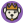

10 base faces — assigned at signup, not chosen. Each one levels up on its own track as that contributor earns stops:
Level 1 · new pup
→
Level 2 · 1st verified stop
→
Level 3 · 3 verified stops
(collar earned)
→

Level 4 · 10 verified stops
(crown earned)